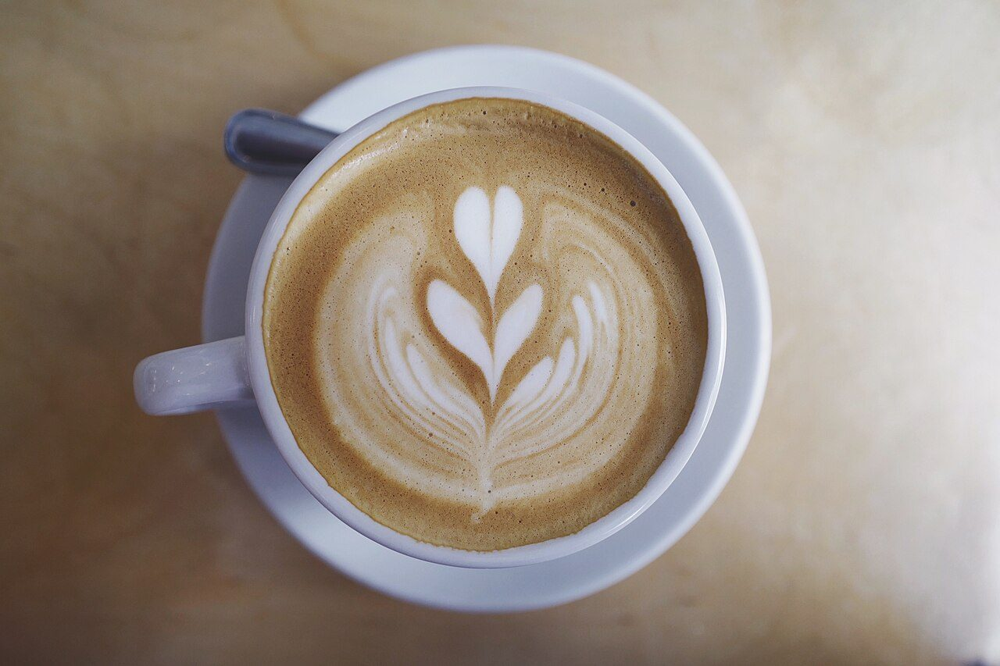

制作側の連想
モンキーレンチの部位を、配置図にしてみる
このサイトは、道具箱にしまってあるモンキーレンチを図にして作りました。六つの部位に番号をふり、図と並べています。制作側の連想で、お店の理念・由来とは無関係です。実際の工具の仕様を示すものでもありません。
凡例
六つの部位
- 1固定あご柄と一体になっている、動かない側のあご。
- 2可動あごねじの回転で前後にスライドする側のあご。
- 3ウォーム可動あごの歯とかみ合う、ねじ状の調整部。
- 4ヘッド二つのあごとウォームを収めた、先端の本体。
- 5柄手で握って力をかける、長い棒状の部分。
- 6目盛りあごの開き幅を読むために刻まれた線。
ギャラリー(イメージ)
パンとコーヒーの写真



写真はパンとコーヒーのイメージです。お店のものではなく、お店で提供している商品を示すものでもありません。
ご案内
お店のこと(確認できたものだけ)
| 所在地 | 〒491-0917 愛知県一宮市昭和1丁目2-16 |
|---|---|
| 電話 | 準備中 |
| 営業時間 | 準備中 |
| 定休日 | 準備中 |
| ご予約 | 準備中 |
| 駐車場 | 準備中 |
| SNS | Instagram @_bakery_kiki |